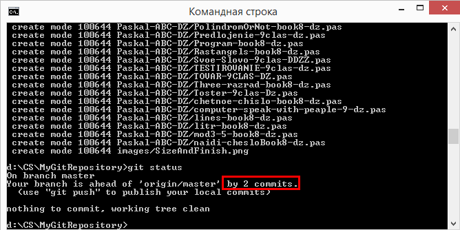

- Git init
- Git status
- Git commit
- Git add
- Git diff
- Git push
- git init - делает папку доступной для работы из гита
- git status - показывает состояния файлов в рабочей директории и индексе
- git commit - берёт все данные, добавленные в индекс с помощью git add, и
сохраняет их слепок во внутренней базе данных(делает commit).
- git add - добавляет содержимое рабочей директории в индекс (staging area)
для последующего коммита
- git diff - используется для вычисления разницы между любыми двумя Git деревьями.
Это может быть разница между вашей рабочей директорией и индексом (собственно git diff),
разница между индексом и последним коммитом (git diff --staged), или между любыми двумя коммитами (git diff master branchB).
- git push - закидывает закоммиченную папку на сервер
Чтобы закинуть папку на гит нужно
- Зайти в нужную папку которая иницилизирована и связана с сервером.
- Добавить все с помощью git add --all или git add (.).
- Прежде чем делать коммит проверте что файлы добавлены (git add) с помощью (git status)
- Закомитить с помощью git commit -m "коментарий для коммита".
- Закинуть на github с помощью команды Git push.
- Прежде чем писать команду (git push) введите команду (git status), должно быть вот так

Обратите внимание на красное выделение в скриншоте. Запушить можно сразу 2 файла и более.
Главная ошибка по которым файл может не попасть на гит
Файл может лежать не в нужной папке. Нужна папка - папка которая иницилизирована и связана с сервером.
! Важность атомарных коммитов - дописать.
- Помимо CLI git существующе GUI: например - Tortoise Git(установлено), или Smart Git.
Чтобы пользовоаться ГУИ, обязательно надо понимать логику CLI.
Тезисы
Когда нужно и когда не нужно использовать слайдер.
Именование картинок (большие и маленькие буквы) в Windows and Linux.
https://roman-molchanov-programming.github.io/ - мой беспланый домен